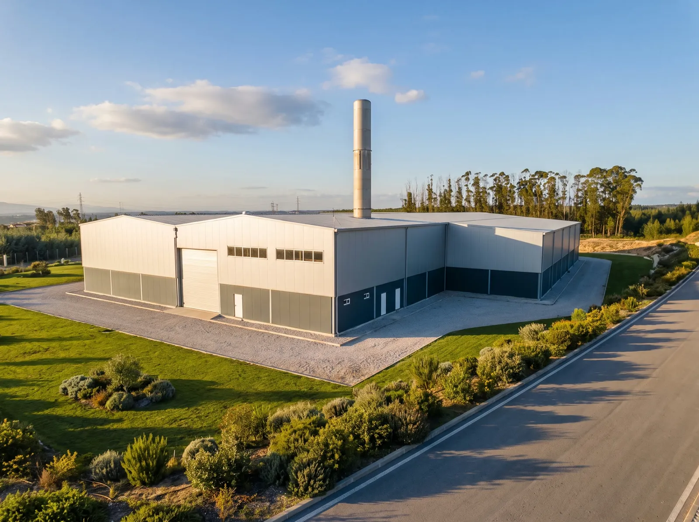
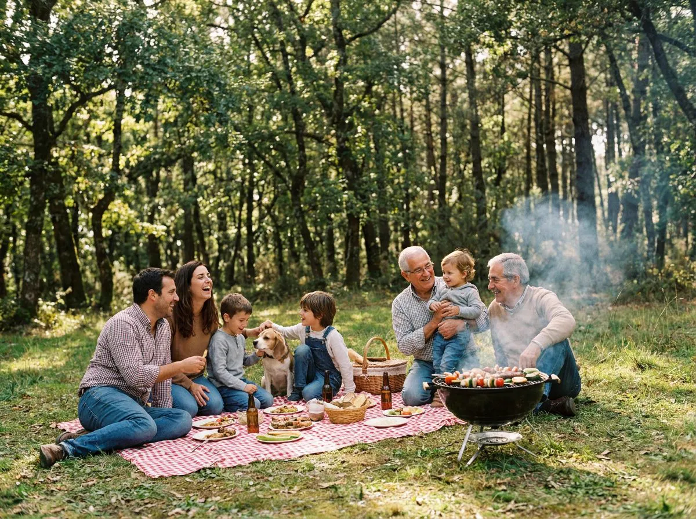

A acácia é uma das piores invasoras da floresta portuguesa: sufoca as espécies nativas, empobrece os solos e arde como pólvora. Nós transformamo-la em brasa — e tu, ao grelhar, ajudas a removê-la.

A acácia (dealbata e melanoxylon) cresce depressa, ocupa tudo e impede carvalhos, sobreiros e medronheiros de crescer.
Madeira densa e resinosa, mato cerrado e contínuo: as manchas de acácia são autoestradas para o fogo.
Consome muita água e altera a química do solo, dificultando a recuperação do ecossistema mesmo depois de removida.
Compramos madeira de acácia proveniente de operações de limpeza florestal — dando valor económico à remoção da invasora, que de outra forma ficaria por fazer.
Pirólise lenta com energia solar converte a madeira em biocarvão de alta pureza, sem desperdício: até o calor do processo é recuperado.
Em parceria com a WWF Portugal (ANP), uma percentagem das vendas financia a reflorestação das áreas limpas com espécies nativas.
Menos acácia significa menos combustível de incêndio junto às aldeias e mais espaço para a floresta que queremos deixar aos nossos filhos.

Não removemos acácia por relatórios de sustentabilidade — fazemo-lo para que as famílias portuguesas continuem a ter onde fazer o piquenique de domingo, com a floresta nativa por cima e a brasa por baixo, em segurança.
Cada saco que compras aproxima esse retrato.
Gestão florestal responsável certificada pelo Forest Stewardship Council — da madeira à embalagem.
Parceria ativa: percentagem das vendas destinada a projetos de reflorestação e biodiversidade.
A produção é alimentada por energia solar, com sistemas de recuperação de calor.
Materiais reciclados e certificados FSC® — incluindo as fardas da equipa.
Instalações industriais requalificadas em Penacova: emprego local e desenvolvimento do interior.
Os nossos pellets de biomassa cumprem o padrão europeu mais exigente de qualidade.
Estamos a preparar algo especial: cada saco terá um código único. Ao registá-lo, vais ver quantos metros quadrados de floresta a tua grelhada ajudou a limpar — e o teu impacto acumulado ao longo do ano.
* Metodologia transparente, com dados reais de produção: cada saco contém 2,5 / 5 / 9 kg de biocarvão (15 / 30 / 60 dm³); produzir 1 kg de biocarvão consome 5 kg de acácia; e um hectare invadido rende entre 150 e 250 toneladas de acácia. Resultado: 0,5–0,8 m² limpos por saco de 15 dm³, 1–1,7 m² pelo de 30 dm³ e 1,8–3 m² pelo de 60 dm³ — e 200–330 m² por cada tonelada de biocarvão produzida. Intervalos conservadores, consoante a densidade do terreno.
Da próxima vez que acenderes a churrasqueira, escolhe a brasa que devolve floresta a Portugal.